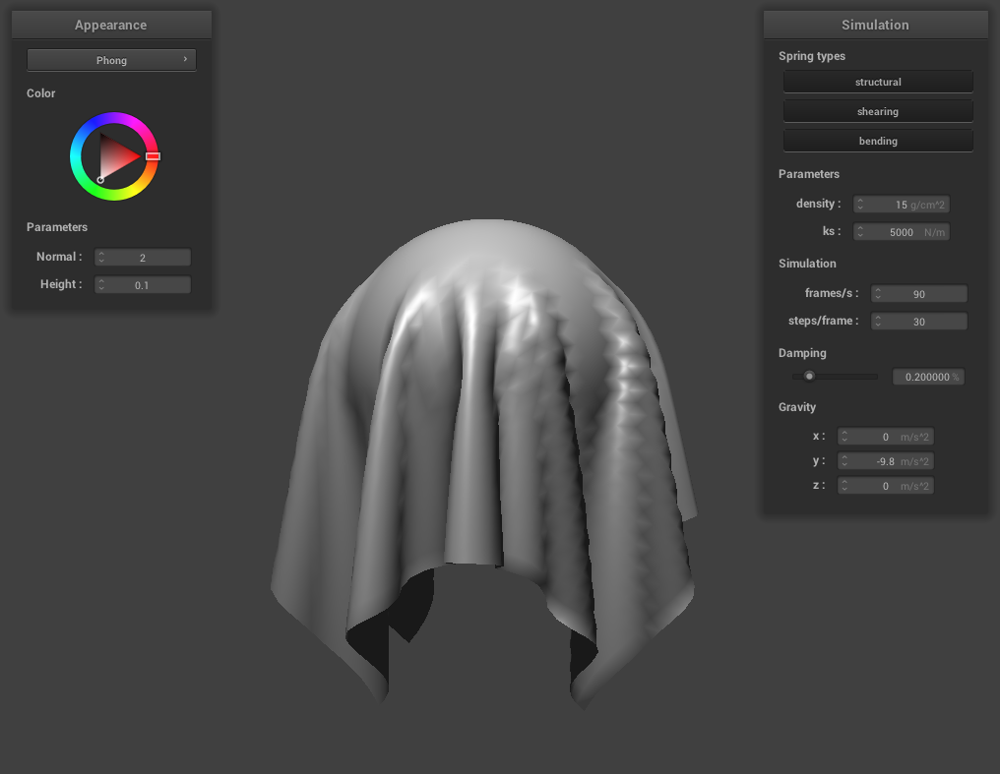

CS184/284A Spring 2025 Homework 4 Write-Up
Link to webpage: https://cal-cs184-student.github.io/hw-webpages-aether/hw4/index.html
Link to GitHub repository: https://github.com/cal-cs184-student/sp25-hw4-bungee-gum

Overview
Give a high-level overview of what you implemented in this homework. Think about what you've built as a whole. Share your thoughts on what interesting things you've learned from completing the homework.Part 1: Masses and springs
Take some screenshots of scene/pinned2.json from a viewing angle where you can clearly see the cloth wireframe to show the structure of your point masses and springs.

|

|
Show us what the wireframe looks like (1) without any shearing constraints, (2) with only shearing constraints, and (3) with all constraints.

|

|

Part 2: Simulation via numerical integration
Describe the effects of changing the spring constantks; how does the cloth behave from start to rest with a very lowks? A highks?
With a very low ks, the cloth will be very loose, have more motion, and generally have less stiffness. With a high ks, the cloth will be more rigid, have less motion, and generally have more stiffness. This makes sense since we have springs in between the particles that make up the cloth, and the stiffness of the springs is directly related to the stiffness of the cloth.

ks = 50 |

ks = 500 |

ks = 5000 |

ks = 50000 |
What about for density?
Density essentially controls the mass of the cloth. With a very low density, the cloth will be very light and will not deform as much, almost like a sheet of paper. With a high density, the cloth will weigh more, deform more, and generally look similar to the cloth with a low ks spring constant. This is due to the fact that gravity (influenced by mass) directly opposes the spring force (influenced by ks).

density = 5 |

density = 15 |

density = 100 |

density = 1000 |
What about for damping?
Damping simulates the loss of energy due to internal friction, allowing the cloth to gradually come to rest without altering the forces acting upon it. With very low damping, the cloth behaves more elastically, bouncing excessively and taking a long time to settle. At moderate damping levels, the cloth loses energy more efficiently, reducing bounce and reaching a resting state more quickly. With high damping, the cloth exhibits minimal bounce and comes to rest smoothly upon reaching the bottom. However, excessive damping can cause the cloth to descend more slowly, as seen with damping levels of 80% and 100%.

damping = 0 |

damping = 0.2 |

damping = 0.8 |

damping = 1.0 |
Show us a screenshot of your shaded cloth from scene/pinned4.json in its final resting state! If you choose to use different parameters than the default ones, please list them.

Part 3: Handling collisions with other objects
Describe your implementation of handling collisions with spheres and planes.For cloth-sphere intersections, we do the following:
- Check if a point mass is inside or intersecting the sphere by comparing the distance from the sphere's center to the point mass with the sphere's radius.
- If an intersection is detected (i.e. the distance is less than the radius), project the point mass radially outward to the sphere's surface so that it lies just outside.
-
Scale the correction vector down by \(1 - f\) to account for friction, and add it to the point mass's
last_position.
- Determine whether a point mass has crossed from one side of the plane to the other between time steps by using the dot product of the point mass's position and the plane's normal vector. If the signs of the dot products using the current and previous positions are different, a crossing has occurred.
-
If a crossing is detected, move the point mass to the point of intersection with the plane, offset slightly along the normal vector (by
SURFACE_OFFSET) to keep it just above the surface. -
Scale the correction vector down by \(1 - f\) to account for friction, and add it to the point mass's
last_position.
Show us screenshots of your shaded cloth fromscene/sphere.jsonin its final resting state on the sphere using the defaultks= 5000 as well as withks= 500 andks= 50000. Describe the differences in the results.
We see that the smaller the ks, the more the cloth deforms and wraps around the sphere. This is consistent with Part 2, where we observed that a lower ks leads to greater deformation of the cloth. On the other hand, with a higher ks, the cloth does not fully wrap around the sphere. Instead, it loosely covers the sphere, with its springs providing increased rigidity to the cloth.

ks = 500 |

ks = 5000 |

ks = 50000 |
Show us a screenshot of your shaded cloth lying peacefully at rest on the plane. If you haven't by now, feel free to express your colorful creativity with the cloth! (You will need to complete the shaders portion first to show custom colors.)

Part 4: Handling self-collisions
Describe your implementation of handling self-collisions.
To efficiently resolve self-collisions in the cloth simulation, I used spatial hashing to group nearby point masses and limit unnecessary pairwise comparisons. The spatial map is built in build_spatial_map() by hashing each point mass's position into a 3D grid cell. The hash_position() function computes this hash by first dividing space into boxes of size w = 3 * width / num_width_points, h = 3 * height / num_height_points, and t = max(w, h) — and then floors the position coordinates to determine the grid cell. The final hash is calculated as i + j * range + k * range * range, where i, j, and k are the floored grid indices and range is a large constant (e.g., 100000) to ensure uniqueness.
During collision resolution in self_collide(), only the point masses within the same cell are checked. If another point mass is within 2 * thickness, a correction vector is computed to push the masses apart. This correction is accumulated across all collisions, averaged, and applied to the current point mass's position, scaled by simulation_steps to ensure smooth separation.
Show us at least 3 screenshots that document how your cloth falls and folds on itself, starting with an early, initial self-collision and ending with the cloth at a more restful state (even if it is still slightly bouncy on the ground).

|

|

|

|
Vary the density as well as ks and describe with words and screenshots how they affect the behavior of the cloth as it falls on itself.
Part 5: Shaders
Explain in your own words what is a shader program and how vertex and fragment shaders work together to create lighting and material effects.
A shader program is a small program written in GLSL that is used to control how graphics are rendered. It typically consists of two parts: a vertex shader and a fragment shader. The vertex shader processes each vertex, applying transformations like position and normal vector calculations. It outputs the final vertex position and other values (called varyings) to be used later.
The fragment shader then takes over after the scene has been rasterized into fragments (potential pixels). It uses the data passed from the vertex shader to determine the final color of each fragment, writing it into out_color. Together, these shaders create visual effects like lighting and materials by controlling how geometry is transformed and how pixels are colored based on light, texture, and surface properties.
Explain the Blinn-Phong shading model in your own words. Show a screenshot of your Blinn-Phong shader outputting only the ambient component, a screen shot only outputting the diffuse component, a screen shot only outputting the specular component, and one using the entire Blinn-Phong model.
The Blinn-Phong shading model is a lighting model used to simulate the interaction of light with a surface. It is composed of three key lighting components—ambient, diffuse, and specular—which are calculated per vertex in the shader. Each component captures a different physical behavior of light and contributes to the realism of rendered scenes.
The ambient component approximates the background light that is scattered uniformly throughout the scene. In the real world, this light would come from indirect bounces off walls and other surfaces, but in our simplified model, it is represented as a constant value. This ensures that objects remain visible even when they aren't directly lit. In the shader, we model this as:
vec3 amb = vec3(ka);
where ka is a small constant (e.g., 0.1) representing ambient reflectivity. This term is independent of light direction or surface orientation.
The diffuse component represents the scattering of light across a rough surface. It depends on the angle between the surface normal and the light direction, following Lambert's cosine law. This models how surfaces appear brightest when directly facing the light and dimmer when tilted away. In the shader, we compute it as:
vec3 diff = kd * ir2 * max(dot(normal, light_dir), 0.0);
Here, kd is the diffuse reflectance coefficient, and ir2 accounts for the light intensity (via the inverse square law). The dot(normal, light_dir) term ensures light only contributes when it is hitting the front of the surface.
The specular component models the bright highlights that appear on shiny surfaces where light reflects directly toward the viewer. Instead of using the traditional reflection vector, the Blinn-Phong model introduces a halfway vector between the light direction and the view direction:
vec3 halfway_dir = normalize(view_dir + light_dir);
The intensity of the specular highlight is determined by the dot product of the normal and this halfway vector, raised to a power p that controls the shininess. The higher the power, the smaller and sharper the highlight:
vec3 spec = ks * ir2 * pow(max(dot(normal, halfway_dir), 0.0), p);
Here, ks is the specular reflectivity, and p controls how quickly the specular reflection falls off. A value like p = 100 represents a very shiny surface, while lower values produce broader highlights.
The final light intensity L at a point is the sum of the ambient, diffuse, and specular terms:
out_color = vec4(amb + diff + spec, 1.0);

|

|

|

|
Show a screenshot of your texture mapping shader using your own custom texture by modifying the textures in /textures/.

Show a screenshot of bump mapping on the cloth and on the sphere. Show a screenshot of displacement mapping on the sphere. Use the same texture for both renders. You can either provide your own texture or use one of the ones in the textures directory, BUT choose one that's not the defaulttexture_2.png. Compare the two approaches and resulting renders in your own words. Compare how your the two shaders react to the sphere by changing the sphere mesh's coarseness by using-o 16 -a 16and then-o 128 -a 128.
Show a screenshot of your mirror shader on the cloth and on the sphere.
Explain what you did in your custom shader, if you made one.